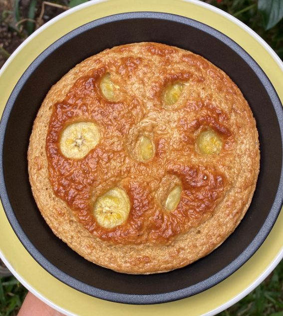

Receta de Pan de Banano
Pan de Banano

Para hacer este delicioso y práctico pan de banano vas a necesitar:
🥚1 huevo entero (pueden hacerlo con 2 yemas).
游꼛1 banano pequen팪o.
🍚1/4 taza de avena integral.
🥄1 cucharadita de polvo de hornear.
🥄Canela, vainilla y endulzante al gusto.
Procedimiento
游룁e licuan los ingredientes en orden en que aparecen, tratando de que el huevo quede con bastante espuma.
游룁e coloca en un molde.
游룁e lleva a la freidora de aire por 13 min a 180 grados cent칤grados.
El intercambio total de la receta es:
1 harina, 1 fruta y 1 protei패na semi. Si lo hacen con claras seri패a 1 protei패na magra.
Ingresá acá para volver al menú principal:
| Menú principal |